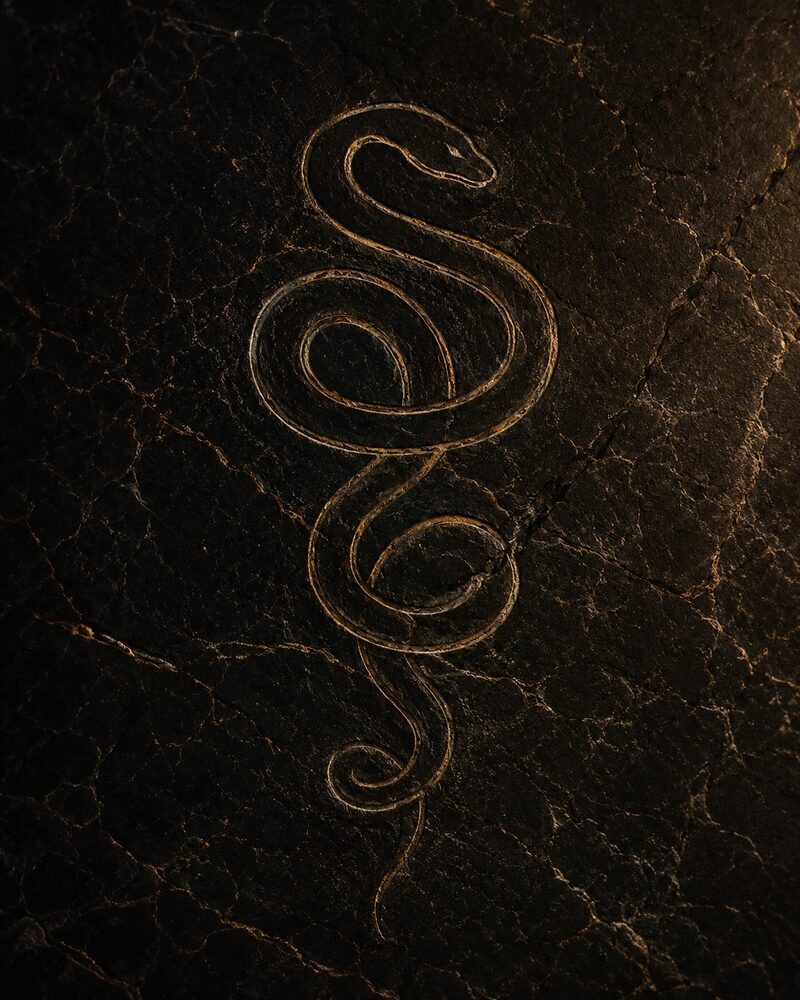
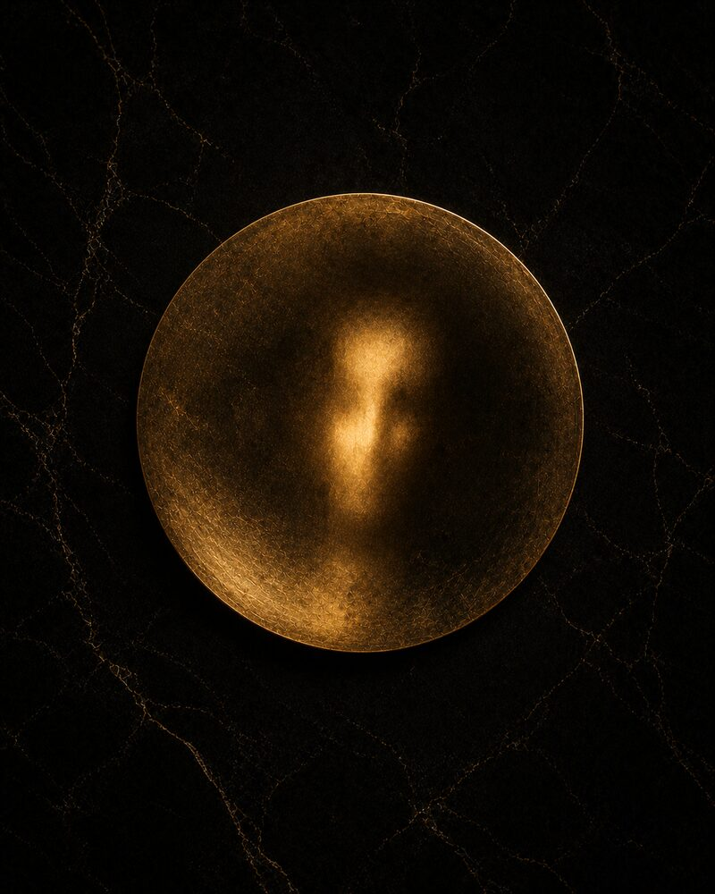
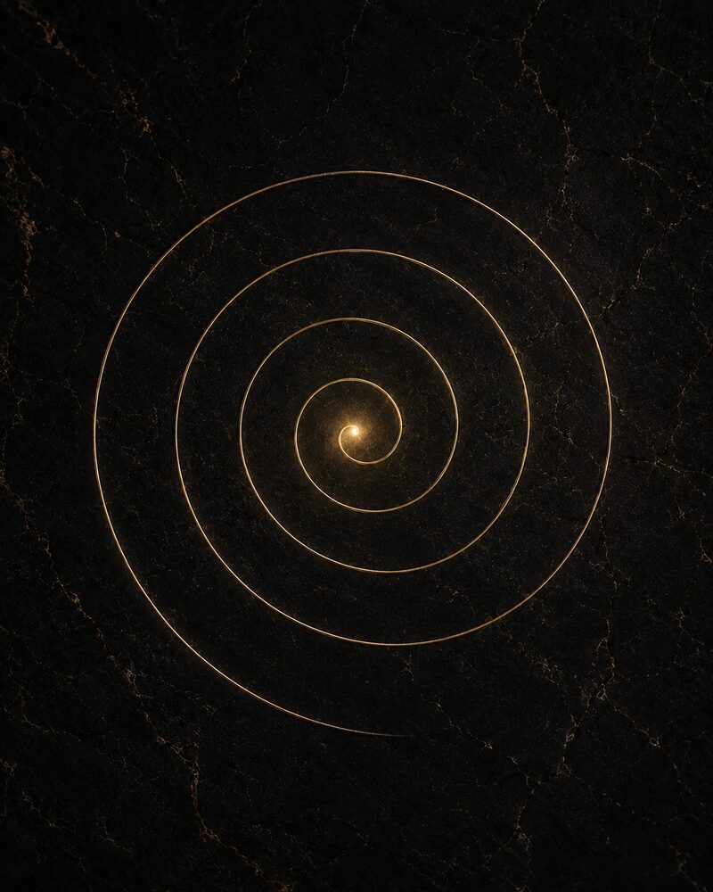
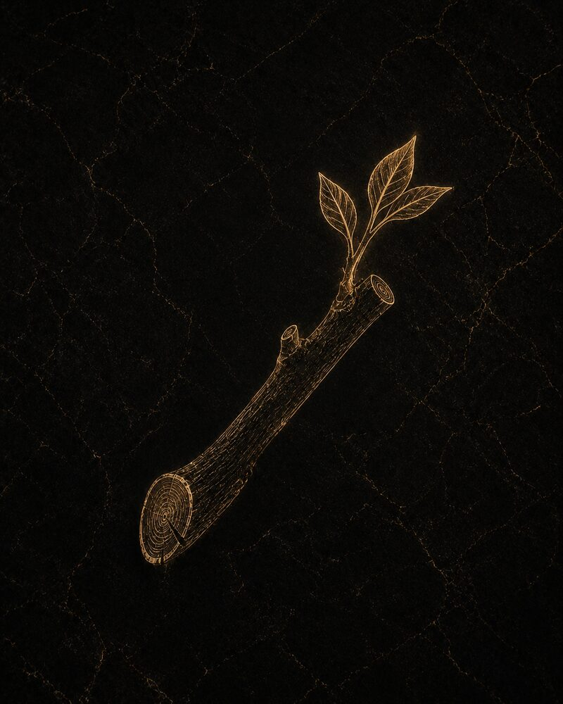
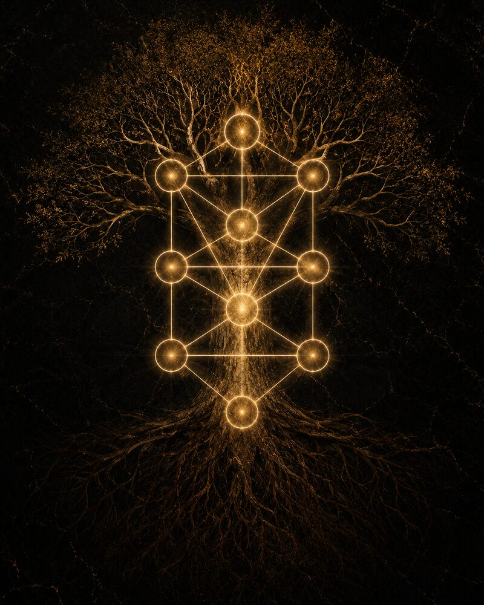
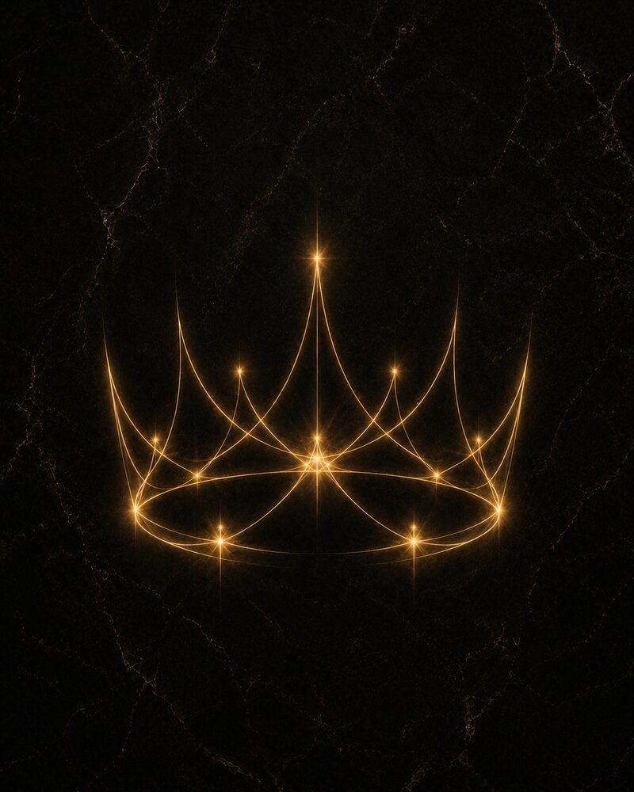
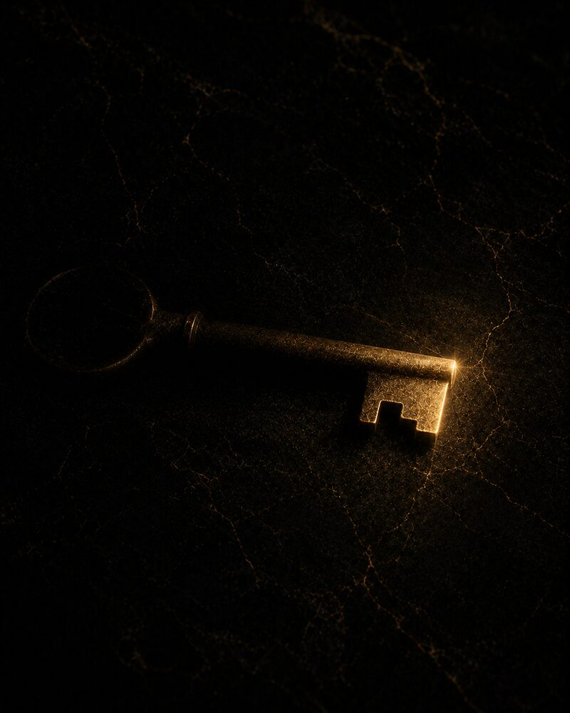
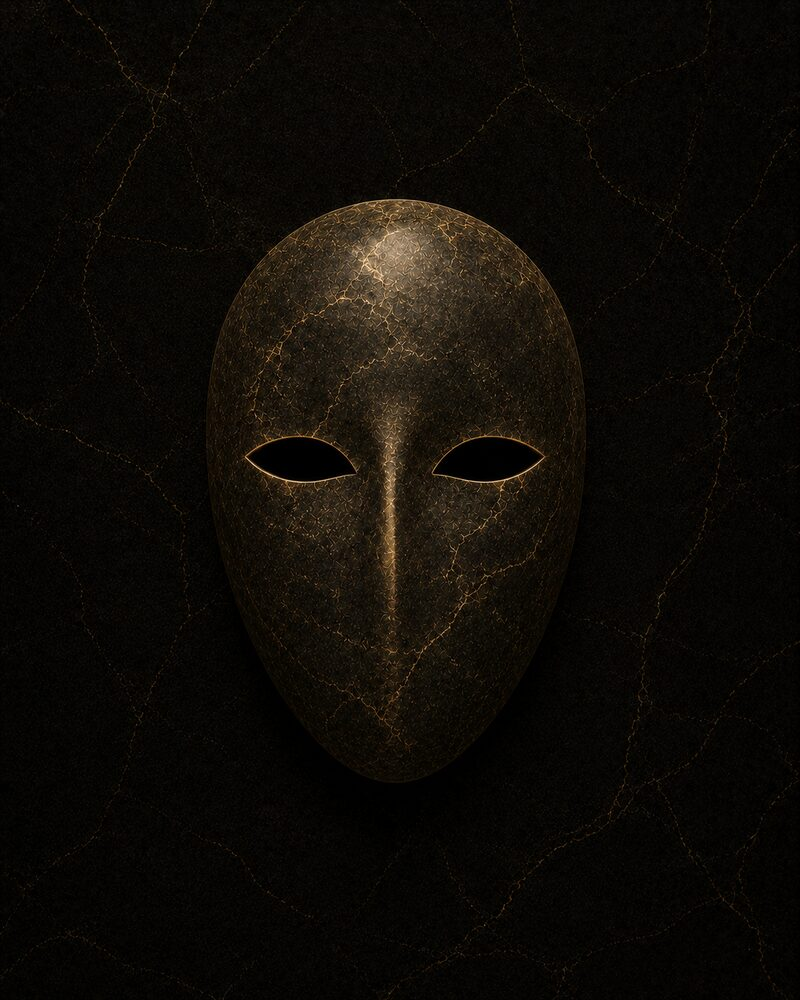
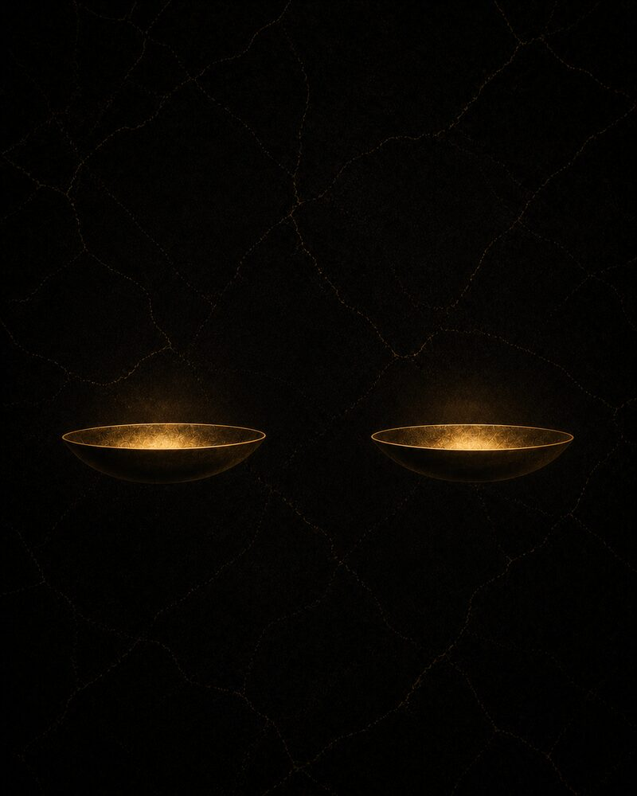
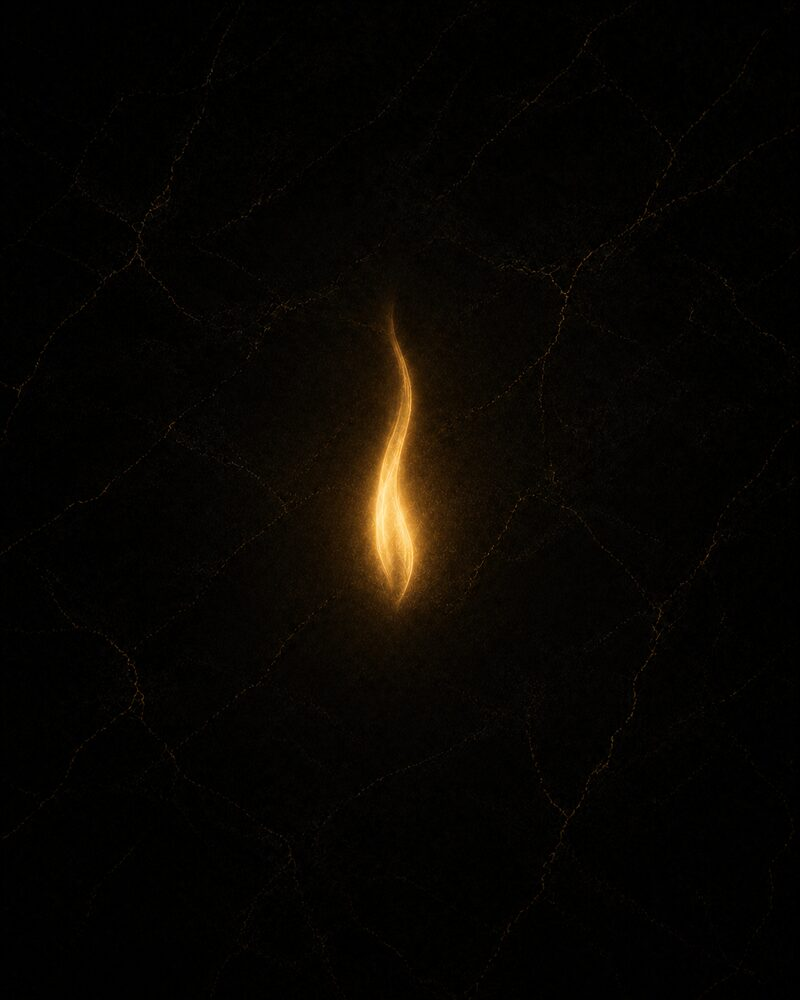

A Serpente
Muda de pele inteira e continua sendo o mesmo animal. Nenhum outro símbolo explica a identidade tão bem.
+
A Serpente

A serpente entra na história humana antes da escrita, antes da agricultura, antes de qualquer sistema que hoje chamaríamos de simbólico. Nas cavernas do Paleolítico Superior ela já aparece gravada ao lado de figuras femininas — não como bicho, mas como linha que se move sozinha, o primeiro objeto do mundo natural que um humano decidiu significar sem tentar caçar, comer ou temer por inteiro. O Egito da primeira dinastia já a usa como coroa — o uraeus, na testa dos faraós — três mil anos antes da era comum. A Mesopotâmia a associa a Ningishzida, guardião do limiar entre os mundos, quase no mesmo período. Quando a tradição hebraica escreve o Éden, a serpente já carrega milênios de uso simbólico anterior: o texto não inventa o símbolo, herda um que já era antigo quando foi escrito.
O detalhe que quase ninguém menciona: a serpente enrolada ao bastão de A Papisa não estava nos baralhos originais de Marselha. Ela chega no século XIX, quando Éliphas Lévi e depois a Golden Dawn reescrevem o Tarô à luz da Cabala e de um Egito hermético em boa parte inventado pela própria época. A carta que hoje lemos como “sabedoria oculta ancestral” é, na verdade, uma releitura vitoriana de um baralho de jogos renascentista. Isso não torna a leitura falsa — torna-a mais interessante: a serpente ali é prova de que os símbolos continuam sendo escritos, não apenas herdados. O oculto, às vezes, tem data de nascimento recente.
Ofiúco existe na faixa do zodíaco há tanto tempo quanto qualquer outra constelação — o Sol atravessa seu território todos os anos, entre novembro e dezembro. Ele não foi esquecido: foi cortado. Os sacerdotes babilônios fixaram o zodíaco em doze signos por razões de calendário e numerologia, não de astronomia — doze se divide bem, encaixa nos meses lunares, fecha contas. Ofiúco sobrava. O gesto de excluir o que não fecha a conta redonda é, ele mesmo, arquetípico: toda tradição decide o que vai ficar de fora do sistema oficial, e o que fica de fora não desaparece — só passa a ser lido como exceção, ou como segredo.
Da'at não é uma das dez sephirot. Ela aparece no diagrama como um espaço vazio, um lugar que se nomeia mas não se numera — a tradição luriânica lê essa ausência como cicatriz, o ponto onde os vasos primordiais se romperam ao tentar conter uma luz forte demais para qualquer recipiente. A serpente do Éden, nessa chave, não introduz o conhecimento: ela aponta para a fratura que já estava lá, a rachadura por onde esse conhecimento sempre teria vazado, com ou sem fruto. Culpar a serpente é mais fácil do que admitir que o sistema já vinha rachado desde antes dela aparecer.
Jung registra, no Livro Vermelho, seus próprios encontros com figuras de serpente durante a imaginação ativa que praticou entre 1913 e 1930 — não como metáfora de aula, mas como visão que ele mesmo atravessou e temeu. É desse material, vivido em primeira pessoa, que nasce sua leitura da serpente como elo com o princípio ctônico feminino — tudo aquilo que a psicologia racionalista ocidental havia empurrado para baixo do chão da consciência. O uróboro que se cita tanto é a versão domesticada dessa experiência. A experiência bruta foi mais parecida com medo.
Muitos anos antes de virar vilã do Éden, a serpente já era instrumento de cura por ordem divina na mesma tradição bíblica: em Números 21, Moisés ergue uma serpente de bronze — Nehushtan — num mastro, e quem a contempla se cura da praga que assolava o povo no deserto. Séculos depois, o rei Ezequias manda destruir esse mesmo objeto sagrado, porque o povo havia passado a queimar incenso para ele como se fosse um deus à parte (2 Reis 18:4). A mesma serpente, dentro da mesma tradição, passa de remédio ordenado por Deus a ídolo que precisa ser esmagado. O Novo Testamento fecha esse círculo de um jeito que poucas leituras populares mencionam: em João 3:14, Jesus compara a própria crucificação diretamente ao episódio da serpente de bronze — “como Moisés levantou a serpente no deserto, assim importa que o Filho do Homem seja levantado.” A serpente não é purificada — é reaproveitada.
No hinduísmo, Ananta-Shesha, a serpente infinita, sustenta o próprio Vishnu flutuando sobre as águas primordiais entre um universo e o seguinte — não ameaça, mas fundamento literal da existência. Na mitologia nórdica, Jörmungandr circula o mundo inteiro mordendo a própria cauda no fundo do oceano, e sua morte, no Ragnarök, é também o gatilho do fim de tudo: a serpente que sustenta o mundo é a mesma que, ao se romper, o destrói. Na Mesoamérica, a serpente muda de função outra vez: Quetzalcoatl, entre os astecas, e Kukulcán, entre os maias, é serpente emplumada — deus do vento, da aprendizagem, um dos criadores do mundo, não sua ameaça. Três civilizações sem contato entre si escolhem a mesma criatura para guardar o ponto mais alto e mais baixo da cosmologia.
O Espelho
Devolve exatamente o que chega até ele. O problema nunca foi o vidro.
+
O Espelho

O espelho mais antigo que se conhece é de obsidiana polida, encontrado em Çatalhöyük, na Anatólia, datado de cerca de 6000 a.C. — quase dois mil anos antes de o vidro aparecer em qualquer civilização. No Egito, os espelhos de bronze eram moldados com o rosto da deusa Hathor entalhado no cabo: olhar para o espelho não era vaidade, era literalmente olhar para dentro do rosto de uma divindade. A leitura ocidental do espelho como armadilha — o mito de Narciso — é grega, chega séculos depois, e já reflete uma virada cultural: de objeto sagrado a advertência moral.
Os baralhos de Marselha não desenham espelho nenhum em A Lua — a associação vem do renascimento mágico, da tradição de scrying, olhar para superfícies escuras em busca de visão. John Dee, astrólogo da corte de Elizabeth I, usava um espelho de obsidiana asteca — hoje exposto no Museu Britânico — para conversar com espíritos. A Lua não ilustra reflexo: ela documenta uma prática real de gente que acreditava enxergar o invisível numa superfície polida.
Mercúrio retrógrado não inverte movimento nenhum no espaço — é ilusão de ótica pura, o efeito de a Terra ultrapassar o planeta em sua própria órbita, como um carro mais rápido faz o mais lento parecer andar para trás na estrada ao lado. O medo coletivo em torno do fenômeno é, sem exagero, medo da própria posição do observador — não do planeta.
A literatura talmúdica usa a palavra aspaklaria — espelho, ou lente — para diferenciar qualidades de visão profética: Moisés enxergava através de um aspaklaria meirah, um espelho claro; os demais profetas, através de um aspaklaria she'eina meirah, um espelho turvo. A revelação nunca foi binária nessa tradição — era uma escala de nitidez, e quase ninguém tinha acesso ao grau mais alto dela.
O encontro com a sombra, para Jung, muitas vezes é literalmente um encontro de espelho: o momento em que o próprio reflexo passa a parecer, por um instante, um estranho. Esse Doppelgänger — o duplo que assusta por ser familiar demais — aparece com frequência em sonhos exatamente na fase em que a sombra começa a exigir reconhecimento.
Êxodo 38:8 registra um detalhe raramente citado: a bacia de bronze do Tabernáculo, usada pelos sacerdotes para purificação ritual, foi fundida a partir dos espelhos de bronze que as mulheres doaram na entrada da Tenda do Encontro. O objeto de vaidade pessoal vira, sem transição suave nenhuma, instrumento de purificação sagrada. Paulo, séculos depois, inverte a imagem em 1 Coríntios 13:12: “agora vemos como por espelho, em enigma” — o conhecimento divino nesta vida é, por definição, reflexo imperfeito, nunca visão direta.
No xintoísmo japonês, a deusa do sol Amaterasu se esconde numa caverna, mergulhando o mundo em escuridão, e só é atraída para fora ao ver o próprio reflexo brilhando num espelho de bronze — o Yata no Kagami, hoje um dos três tesouros sagrados da família imperial japonesa. Entre os astecas, Tezcatlipoca, “Espelho Fumegante”, carrega um disco de obsidiana polida usado para adivinhação e para revelar a natureza oculta de quem nele se olhasse. Duas mitologias sem contato entre si escolhem o espelho como instrumento literal de autoencontro divino.
O Labirinto
Um único caminho, sem bifurcações — o único jeito de se perder ali é parar de andar.
+
O Labirinto

O padrão de labirinto unicursal — um único caminho, sem bifurcações — aparece em gravuras rupestres na Galiza e no Vale Camônica, na Itália, datadas de cerca de 1800 a.C., mais de mil anos antes de qualquer menção ao Minotauro cretense. A mesma forma surge em petróglifos Hopi, na América do Norte, e em pisos de templos na Índia. O mito grego — Teseu, o fio de Ariadne, o monstro no centro — é narrativa tardia costurada sobre um símbolo que já circulava havia milênios sem qualquer história anexada.
A ideia de que os arcanos maiores contam uma “Jornada do Louco” — sequência narrativa com começo, meio e fim — é popularização do século XX, associada a Eden Gray nos anos 1970. Antes disso, a literatura esotérica tratava os arcanos como hierarquia estática, uma escada, não uma história. A sensação de estar “percorrendo um caminho” ao ler o Tarô é, em boa parte, uma lente recente aplicada sobre um sistema mais antigo.
As casas do mapa se contam no sentido anti-horário a partir do Ascendente — na contramão de qualquer hábito comum de leitura. Essa direção não é convenção arbitrária: espelha o movimento aparente do céu visto da Terra. Ler um mapa astral já exige, estruturalmente, andar contra o sentido esperado.
A Árvore contém dois caminhos sobrepostos e opostos: o Raio Relâmpago, que desce em zigue-zague de Kéter até Malkhut na ordem da criação, e o Caminho de Retorno, que o praticante percorre em sentido inverso, mais devagar, tocando pontos intermediários diferentes. O mesmo diagrama serve dois labirintos distintos, andando em direções contrárias.
Jung usava especificamente a imagem do labirinto — não apenas de espiral — para descrever a transferência em análise: analista e paciente perdidos juntos num caminho comum, onde se perder faz parte da cura, não é falha dela. Ariadne, nessa leitura, não é quem sabe o caminho — é quem disponibiliza o fio, sem garantia nenhuma de saída.
A catedral de Chartres, na França, tem embutido no chão de sua nave um labirinto de pedra do século XIII que os fiéis percorriam de joelhos como peregrinação substituta — quem não podia viajar até Jerusalém caminhava o “Chemin de Jérusalem” ali mesmo, dentro da própria igreja. A penitência não exigia distância geográfica: exigia o tempo e a humildade de percorrer cada curva até o centro.
Heródoto descreve um labirinto egípcio junto ao lago Méris, próximo a Hawara, com milhares de câmaras — parte real, parte lenda já na Antiguidade. No Hopi, o símbolo Tápu'at, “Mãe e Filho”, desenha um labirinto unicursal que representa o caminho de emergência da humanidade saindo do mundo inferior para este — a mesma forma que na Grécia guarda um monstro, entre os Hopi guarda um nascimento.
A Árvore
A parte que sustenta fica debaixo da terra, invisível, enquanto a copa recebe todo o crédito pela luz.
+
A Árvore

Antes de qualquer oráculo de cartas, havia o oráculo de árvore. Em Dodona, na Grécia, sacerdotisas interpretavam o vento passando pelas folhas de um carvalho sagrado como a própria voz de Zeus — um dos oráculos mais antigos do mundo grego, mais antigo até que Delfos. A palavra “druida”, na tradição celta, provavelmente vem da raiz que designa carvalho. E sob uma figueira específica, ainda viva por descendência direta em Bodh Gaya, um homem chamado Sidarta se tornou Buda. Em três tradições distintas, a árvore não simboliza sabedoria à distância — é o lugar físico onde a sabedoria efetivamente aconteceu.
No Ás de Paus do baralho Rider-Waite, o bastão é literalmente um galho cortado que ainda solta folhas — madeira que se recusa a terminar de morrer. Poucos leitores param nesse detalhe, mas ele é a carta inteira resumida numa imagem: força vital que continua brotando mesmo depois do corte que deveria interrompê-la.
A técnica das casas derivadas trata qualquer casa do mapa como um mapa novo, completo, nascendo de dentro da casa original — a sétima casa vista como uma primeira casa própria, com suas doze divisões inteiras dentro dela. O mapa se ramifica de verdade, recursivamente, como uma árvore que gera outra árvore inteira em cada um dos seus galhos.
O candelabro descrito em Êxodo — a Menorá — tem seus cálices desenhados em forma de flor de amendoeira, a shaked, a árvore que floresce primeiro entre todas no Levante. Seu próprio nome hebraico significa “a vigilante”, a que se apressa. A tradição lê nisso um símbolo do próprio movimento divino: agir primeiro, florescer antes de qualquer sinal de que é hora.
A arbor philosophica, a árvore filosófica dos textos alquímicos que Jung estudou a fundo, representa o processo inteiro da grande obra: crescimento lento, contido dentro do vaso, sem pressa possível. Diferente da mandala circular, essa árvore não busca um centro — busca tempo, camada sobre camada, a única coisa que nenhuma técnica consegue acelerar.
Juízes 9 guarda uma parábola política pouco lembrada: as árvores decidem ungir um rei entre si. A oliveira recusa, por não abrir mão de seu óleo; a figueira recusa, por não abrir mão de seus frutos; a videira recusa, por não abrir mão do vinho. Só o espinheiro aceita — a única planta sem nada de valioso a perder, e portanto a única disposta a reinar sobre as demais. Um dos textos bíblicos mais afiados sobre poder está escondido dentro de uma fábula de árvores.
Dafne, ninfa perseguida por Apolo, pede socorro ao próprio pai, o deus-rio Peneu, e é transformada em loureiro no instante exato em que seria alcançada — a árvore, ali, não é destino: é fuga bem-sucedida, o único jeito de escapar que a mitologia grega concede a uma mulher encurralada. Apolo passa a usar louros como coroa para sempre, carregando no próprio símbolo de vitória a lembrança de uma recusa.
A Árvore da Vida
Dez círculos, vinte e dois caminhos — e o mapa mais copiado da tradição mística é mais recente do que parece.
+
A Árvore da Vida

A árvore como símbolo de vida atravessa quase toda civilização que já talhou pedra. Os assírios gravam sua Árvore Sagrada nos relevos de palácio quase mil anos antes da era comum, ladeada por figuras aladas que a regam com pinhas — a imagem mais repetida da arte mesopotâmica depois do próprio rei. Os egípcios têm a árvore-persea, onde os deuses escrevem o nome de cada faraó no dia do nascimento. Os nórdicos erguem Yggdrasil, cujas raízes tocam três mundos ao mesmo tempo. Mas o diagrama que hoje chamamos de Árvore da Vida cabalística — dez círculos, vinte e dois caminhos, a forma exata que se vê em qualquer livro de Cabala — não é tão antigo quanto parece: cristaliza-se tarde, entre o Zohar do século XIII e as sínteses renascentistas de cabalistas cristãos como Pico della Mirandola, chegando à forma fixa que conhecemos só com os herméticos da Golden Dawn, no fim do XIX. A raiz é antiga. O mapa é recente.
A ideia de que os vinte e dois arcanos maiores correspondem, um a um, aos vinte e dois caminhos da Árvore da Vida não vem do Tarô nem da Cabala originais — vem de MacGregor Mathers e da Golden Dawn forçando a correspondência entre um baralho de jogos italiano do século XV e um diagrama místico judaico que nunca teve carta nenhuma em sua história. A costura é genial e é, ao mesmo tempo, uma invenção de cento e quarenta anos atrás vendida como sabedoria milenar. Isso não invalida a leitura — os sistemas simbólicos se enriquecem exatamente assim, por enxerto. Mas vale saber que o enxerto tem data.
Cada sephirah da Árvore recebe um planeta: Chessed é Júpiter, Guevurá é Marte, Tiféret é o Sol, Hod é Mercúrio, Netzach é Vênus, Iesod é a Lua. A diferença em relação à astrologia comum não está nos planetas — está na geometria. No mapa natal, os planetas se organizam horizontalmente, em casas e signos, todos no mesmo plano. Na Árvore, os mesmos planetas se organizam verticalmente, numa hierarquia de densidade crescente, da luz mais sutil até a matéria mais bruta. É o mesmo céu, lido em outra dimensão.
Um detalhe que a maioria das ilustrações populares esconde: a Árvore cabalística é tradicionalmente descrita como invertida. A raiz não fica embaixo, como em qualquer árvore que já se viu crescer — fica em cima, no Ein Sof, o infinito inatingível que nenhuma sephirah consegue nomear por completo. Os galhos é que descem, esticando-se até a matéria. A origem da própria vida, nessa leitura, não está enterrada no passado de cada um — está acima, fora do alcance, e o que parece raiz é, na verdade, o ponto mais distante da fonte.
Jung se aproximou da Cabala tarde, sobretudo em seus últimos anos de trabalho com alquimia, e reconheceu na Árvore um símbolo de totalidade psíquica — próximo do que ele já chamava de mandala, mas com uma diferença que ele próprio registrou como significativa: a mandala é circular, centrada; a Árvore é vertical, ramificada. Isso muda o que “individuação” significa nessa chave: não apenas encontrar um centro, mas também se mover entre níveis — reconhecer que existem andares na própria psique.
No relato do Gênesis existem duas árvores distintas no centro do Éden — a Árvore da Vida e a Árvore do Conhecimento do Bem e do Mal —, fáceis de confundir numa leitura rápida. Depois da expulsão, o texto é específico: querubins com espada flamejante são postos para guardar apenas a Árvore da Vida, impedindo que a humanidade coma dela e viva para sempre (Gênesis 3:22-24). O detalhe que quase nenhuma leitura dominical menciona: a mesma árvore reaparece no último capítulo da Bíblia cristã. Em Apocalipse 22:2, a Árvore da Vida está de volta, no centro da Nova Jerusalém, dando doze tipos de fruto e cujas folhas servem para “a cura das nações” — de acesso livre, sem guarda nenhuma. A árvore proibida no primeiro livro é oferecida de bandeja no último.
Os nórdicos erguem Yggdrasil, a árvore que sustenta nove mundos ao mesmo tempo, em cuja base as Nornas tecem o destino de deuses e homens sem distinção entre uns e outros — a árvore não observa o destino, ela o tece fisicamente em suas raízes. Na mitologia chinesa, Fusang é a árvore onde os dez sóis do céu descansam, empoleirados como pássaros, revezando-se para nascer um por dia — até o mito registrar o dia em que todos os dez insistiram em nascer juntos, incendiando a terra, obrigando o arqueiro Hou Yi a abatê-los.
A Coroa
Pesa mais do que qualquer outro adereço porque nunca foi decoração.
+
A Coroa

A Paleta de Narmer, gravada por volta de 3100 a.C., registra o momento exato em que um rei passa a usar as coroas do Alto e do Baixo Egito unificadas — um dos primeiros símbolos políticos da história que se pode datar a um evento específico, não a uma tradição vaga. Paralelamente, a palavra latina corona nomeava, originalmente, a grinalda de folhas dada a atletas e militares vitoriosos — nada de metal, nada de trono. Duas linhagens completamente distintas — poder de Estado e reconhecimento de mérito — convergem no mesmo símbolo que hoje se usa sem distinguir qual das duas está sendo invocada.
No baralho Thoth, de Aleister Crowley e Frieda Harris, a grinalda de O Mundo não é vegetal — é uma serpente mordendo a própria cauda. A mesma carta, a mesma promessa de ciclo fechado, mas coroada por uma imagem inteiramente diferente da versão Rider-Waite: duas visões discordando sobre o que, exatamente, deveria coroar a conclusão de um ciclo.
Antes de qualquer signo solar, a astrologia persa medieval já chamava quatro estrelas fixas de “estrelas régias” — Aldebaran, Régulo, Antares e Fomalhaut — cada uma guardiã de uma direção cardeal do céu. Essas coroas estelares são mais antigas do que a leitura solar que hoje domina o imaginário popular.
Kéter, a coroa, às vezes é descrita como sephirah demais próxima do Ein Sof incognoscível para contar de verdade entre as dez — o mesmo tipo de ausência estrutural que marca Da'at, só que no topo da Árvore, não no meio. O sistema tem um vazio na base e outro no ápice: nem o começo nem o centro se deixam nomear por completo.
Sonhos de casamento e coroação real, na leitura junguiana, sinalizam a coniunctio alquímica — rei e rainha unidos, coroados juntos, nunca sozinhos. A coroa, nesse sistema, não premia um indivíduo: marca a união bem-sucedida de duas forças opostas dentro de uma mesma psique.
A única coroa que os quatro Evangelhos descrevem em detalhe não é de ouro: é de espinhos, trançada por soldados romanos como zombaria antes da crucificação (Mateus 27:29). A tradição que consagra a coroa como símbolo máximo de honra tem, no centro exato de sua própria narrativa fundadora, uma coroa usada como arma de humilhação — a coroa como tortura disfarçada de título.
Ariadne, depois de ajudar Teseu a atravessar o labirinto e ser abandonada por ele numa ilha, recebe de Dionísio uma coroa de ouro como presente de casamento — coroa que, à sua morte, o deus lança ao céu, onde se torna a constelação Corona Borealis, ainda visível hoje. A mulher que deu o fio para sair de um labirinto termina coroada entre as estrelas por um deus diferente daquele que ela salvou.
A Chave
Abre uma porta específica. Nenhuma chave mestra sobrevive a um sistema simbólico sério.
+
A Chave

Os mecanismos de fechadura mais antigos já encontrados vêm do Egito e de Nínive, com quase quatro mil anos — mas o peso simbólico da chave vem de outro lugar: Jano, deus romano dos limiares e dos começos, era frequentemente representado segurando uma chave. Quando o cristianismo entrega a Pedro “as chaves do reino dos céus”, em Mateus 16:19, está transpondo quase sem alteração o papel de um deus pagão guardião de portas para uma nova estrutura de autoridade religiosa.
As chaves cruzadas de O Hierofante não são símbolo genérico de tradição — são o brasão papal, as chaves de ouro e prata do Vaticano, herdeiras diretas da promessa feita a Pedro. A maioria lê a carta como “ensino, autoridade” sem perceber que está olhando, literalmente, para o escudo de uma instituição religiosa específica.
A astrologia árabe medieval tinha o conceito de almuten — o planeta que vence a disputa de dignidades por múltiplos critérios sobrepostos, considerado a chave real de um ponto do mapa mesmo quando não é o regente óbvio. Diferentes escolas discordavam sobre quem, de fato, segurava a chave de cada casa.
Pela guematria, cada letra hebraica carrega valor numérico — o que significa que uma única chave-letra pode abrir várias portas ao mesmo tempo, todas as palavras que compartilham a mesma soma. Não existe fechadura de porta única nesse sistema: existe fechadura de correspondência múltipla, para quem sabe contar.
O método de amplificação de Jung — diferente da associação livre freudiana — não busca a chave de um símbolo só na história pessoal de quem sonhou. Busca comparando a imagem com paralelos de mitologia, alquimia, religião. A chave, nesse método, nunca se encontra sozinha: encontra-se ao lado de uma biblioteca inteira de imagens equivalentes.
Isaías 22:22 já usa a expressão “a chave da casa de Davi”, colocada sobre o ombro de Eliaquim como símbolo de mordomia sobre o palácio real — texto escrito séculos antes de Mateus 16:19 repetir quase a mesma fórmula para Pedro. A frase que soa como invenção cristã original já era título administrativo hebraico havia muito tempo.
Hécate, deusa grega das encruzilhadas e dos limiares, é chamada kleidouchos — a que guarda as chaves —, capaz de abrir e fechar a passagem entre o mundo dos vivos e o submundo. Diferente de Jano, guardião romano de portas físicas, Hécate guarda um limiar que não tem localização geográfica nenhuma: só se atravessa por permissão dela.
A Máscara
Protege e disfarça com o mesmo gesto. A diferença está em quem está do outro lado.
+
A Máscara

A máscara neolítica encontrada nas colinas próximas a Hebron, esculpida em pedra há cerca de nove mil anos, é um dos objetos de arte figurativa mais antigos já descobertos — anterior à própria escrita em milênios. Mas o detalhe mais revelador é linguístico: em grego, prosopon significa, ao mesmo tempo, rosto, máscara e pessoa — a mesma palavra, sem distinção nenhuma entre o que se mostra e quem se é. A separação entre máscara-mentira e rosto-verdade é filosofia posterior, não vocabulário original.
As cartas de corte do baralho Visconti-Sforza, o mais antigo Tarô completo que sobreviveu, foram modeladas sobre retratos reais da nobreza de Milão — o Rei e a Rainha que hoje lemos como arquétipos universais começaram como fofoca visual sobre pessoas específicas do século XV, comissionada para um baralho de casamento.
A astrologia helenística chamava o Ascendente de horoskopos, o vigia da hora — o ponto que o céu simplesmente mostrava no instante exato do nascimento. A máscara, nessa origem, não é escolhida por ninguém: é atribuída inteiramente pelo momento, o que transforma persona em circunstância, não em disfarce deliberado.
Os partzufim — literalmente “rostos” ou “semblantes” na Cabala luriânica — descrevem o divino se revelando apenas através de uma série de faces personificadas específicas, cada uma uma máscara necessária para um aspecto que não poderia se mostrar diretamente. A mesma lógica do prosopon grego, chegando por caminho totalmente separado à mesma conclusão: o oculto precisa de rosto para se tornar cognoscível.
Jung não tratava a persona como falha pessoal — via sua formação como necessidade normal da primeira metade da vida. A crise que via em consultório, geralmente em profissionais bem-sucedidos por volta dos quarenta anos, não era ter uma máscara: era não ter construído nada além dela. A máscara só é perigosa quando não sobra rosto nenhum embaixo capaz de tirá-la.
Depois de descer do Sinai, o rosto de Moisés brilha tão intensamente que o povo tem medo de se aproximar — ele passa a usar um véu ao falar com eles, removendo-o apenas diante de Deus (Êxodo 34:29-35). Paulo reinterpreta esse véu em 2 Coríntios 3 como símbolo de entendimento obscurecido, removido apenas em Cristo. O mesmo objeto começa como proteção contra um brilho excessivo e termina como metáfora de cegueira espiritual.
Nas tradições Iorubá do oeste africano, as máscaras Gelede, usadas em rituais que homenageiam o poder ancestral feminino, não representam espíritos: durante a cerimônia, o espírito passa a habitar quem a veste. Não é atuação — é ocupação temporária. A distinção ocidental entre rosto verdadeiro e máscara-mentira simplesmente não se aplica a essa cosmologia.
A Balança
Mede sem julgar — até alguém decidir ler o lado que pesou mais.
+
A Balança

A cerimônia egípcia da pesagem do coração, registrada no Livro dos Mortos por volta de 1500 a.C., mostra Anúbis pesando o coração do morto contra a pena de Maat, a deusa da ordem e da verdade — um dos primeiros usos documentados de uma balança como metáfora de justiça cósmica, mais de mil anos antes de Têmis grega ou Justitia romana. A balança física, porém, já existia antes como ferramenta de comércio no Vale do Indo, séculos mais cedo: a imagem da justiça nasceu emprestada da tecnologia de mercado, não o contrário.
Nos baralhos de Marselha, a Justiça ocupa a posição VIII. Na reordenação hermética que segue o Rider-Waite, ela se move para XI, trocando de lugar com a Força — ajuste feito para que a numeração batesse com a correspondência astrológica de Libra. Duas linhagens de Tarô discordam, de forma documentada, sobre onde exatamente a justiça deveria estar na sequência moral das cartas.
Libra é o único signo do zodíaco representado por um objeto, não por um animal ou figura — nos zodíacos babilônios mais antigos, a mesma faixa de céu se chamava “as garras” do Escorpião vizinho. Só a astrologia romana separou o trecho, deu-lhe forma de balança, num momento que coincide, de forma pouco casual, com a campanha de Augusto para se associar publicamente à deusa Iustitia.
Tiféret também é chamada Rachamim — compaixão — e ocupa o coração literal da Árvore, sexta entre dez sephirot. O equilíbrio ali não é cálculo frio: é compaixão funcionando como mecanismo que impede a expansão de Chessed de virar permissividade e o rigor de Guevurá de virar crueldade.
Jung tomou emprestado o termo enantiodromia diretamente de Heráclito, filósofo pré-socrático que o usava para descrever como tudo se converte, cedo ou tarde, em seu oposto — dia em noite, vida em morte. O conceito de equilíbrio psíquico mais citado da obra junguiana é, literalmente, física grega de dois mil e quinhentos anos aplicada à mente.
Daniel 5:27 registra a cena da escrita na parede durante o banquete de Belsazar: “Tekel: pesado foste na balança e achado em falta” — a origem literal da expressão que ainda hoje se usa em português para julgamento moral, quase três mil anos depois de escrita.
Na tradição zoroastriana persa, a alma cruza a Ponte Chinvat depois da morte, e o peso de seus pensamentos, palavras e ações determina a largura da travessia: para quem viveu bem, a ponte se alarga; para quem não, ela se estreita até a espessura de uma lâmina, despencando a alma no abismo. Sem qualquer contato documentado com o Egito, os persas chegam à mesma ideia central da pesagem do coração.
O Fogo
Destrói e sustenta a vida com o mesmo movimento, sem pedir licença para nenhum dos dois.
+
O Fogo

No Zoroastrismo persa, entre 1500 e 1000 a.C., o fogo — Atar — era tratado como presença visível direta do divino, mantido aceso em templos que jamais deveriam apagar. Alguns templos zoroastrianos afirmam manter a mesma chama acesa continuamente há mais de mil e quinhentos anos. De todos os elementos, apenas o fogo recebeu esse tratamento: água, terra e ar podem ser deixados ir. O fogo, nessa tradição, é o único considerado sagrado demais para se apagar.
A correspondência elemento-naipe que hoje parece óbvia — Paus é fogo — não era universal antes da padronização da Golden Dawn no século XIX. Tradições regionais de baralho italiano e espanhol mais antigas, em alguns casos, associavam o fogo às espadas, não aos bastões. O que parece regra fixa é, na verdade, convenção relativamente recente.
Áries, Leão e Sagitário compartilham o elemento fogo, mas cada um o expressa por um modo diferente — cardinal, fixo, mutável: iniciar, sustentar, espalhar. O fogo astrológico nunca foi uma coisa só. São três verbos diferentes usando o mesmo elemento.
A frase hebraica do episódio da sarça — esh lo tokhal, fogo que não consome — é lida por comentaristas hassídicos não como milagre único, mas como descrição de estado aspiracional: a alma equilibrada deveria arder com paixão genuína sem se destruir nem destruir o que toca.
A calcinatio alquímica — queimar a matéria bruta até virar cinza antes de reconstruí-la em ouro — foi lida por Jung como a fase psicológica em que uma estrutura de identidade antiga e rígida precisa ser destruída antes que qualquer transformação genuína seja possível. Fogo, no sistema junguiano, não é apenas energia: é especificamente a fase que precisa destruir algo primeiro.
Em Atos 2:3, línguas de fogo descem sobre os apóstolos no Pentecostes — o momento fundador da igreja cristã escolhe justamente o fogo como forma visível do Espírito Santo, não vento, não luz, não voz. De todos os elementos disponíveis na tradição bíblica, este é o que a narrativa escolhe para marcar o nascimento institucional de uma fé inteira.
Prometeu rouba o fogo dos deuses gregos e é punido eternamente, acorrentado a uma rocha, o fígado devorado todo dia por uma águia e regenerado toda noite. Do outro lado do mundo, na mitologia maori, o semideus trapaceiro Maui rouba o segredo do fogo da deusa Mahuika arrancando suas unhas incandescentes uma a uma, até restar só a última — que ela lança contra ele, e cujo fogo se aloja dentro da madeira. Duas culturas sem contato, dois heróis roubando fogo de uma divindade, dois castigos completamente diferentes para o mesmo gesto.